Childhood and Education
In 2016, Ocean Vuong published his first full-length poetry collection, Night Sky with Exit Wounds, released by Copper Canyon Press. The book was widely acclaimed for its lyrical intensity and exploration of war, exile, and queer identity. It won several prestigious awards, including the T. S. Eliot Prize, the Whiting Award, and the Forward Prize for Best First Collection, quickly establishing him as one of the most important new voices in contemporary poetry.
The success of Night Sky with Exit Wounds led to invitations for public readings at universities, literary festivals, and cultural institutions around the world. Unlike the underground circuits of earlier generations of poets, Vuong’s performances were marked by a quiet, reflective delivery that contrasted with the raw urgency of his themes. These readings brought his work to broader audiences and solidified his reputation as both a poet and cultural figure engaged in questions of memory, migration, and belonging.
Works
His first poems appeared in small literary journals, but it was with the collection Night Sky with Exit Wounds (2016) that he gained international recognition. His poetry explores themes of the Vietnam War’s legacy, migration, queer identity, and the fragility of language.
In 2019, he published his debut novel, On Earth We’re Briefly Gorgeous, widely acclaimed by critics. Written as a letter to his illiterate mother, the book intertwines autobiography, family history, and reflections on sexuality, race, and inherited trauma.
In 2022, he released Time Is a Mother, a poetry collection shaped by mourning his mother’s death and an even more intimate exploration of grief and survival.
Ocean Vuong currently teaches literature and creative writing at the University of Massachusetts Amherst.
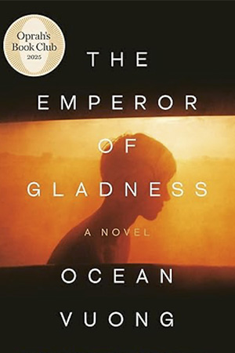
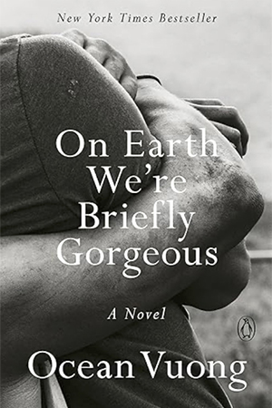
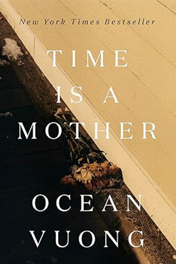
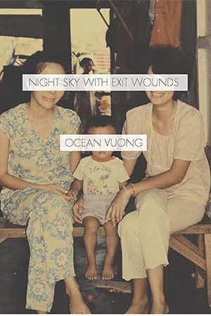
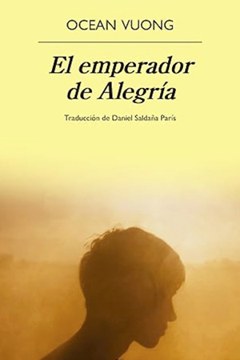
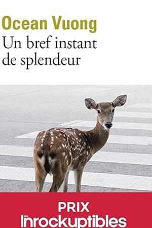
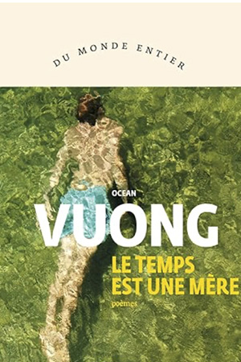
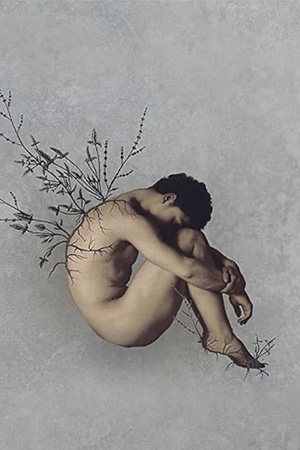
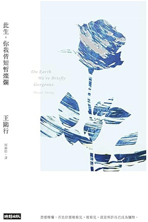
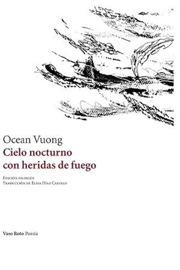
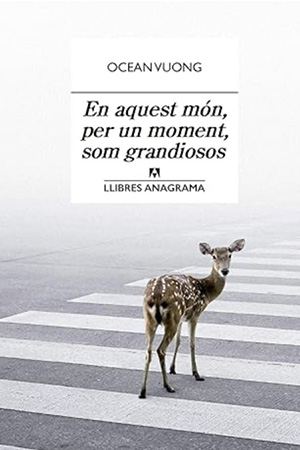